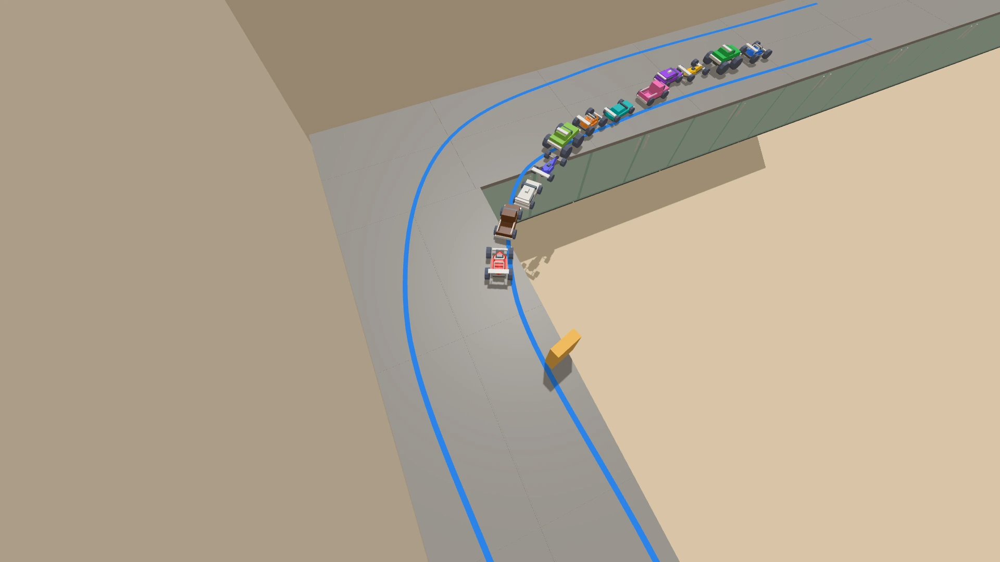
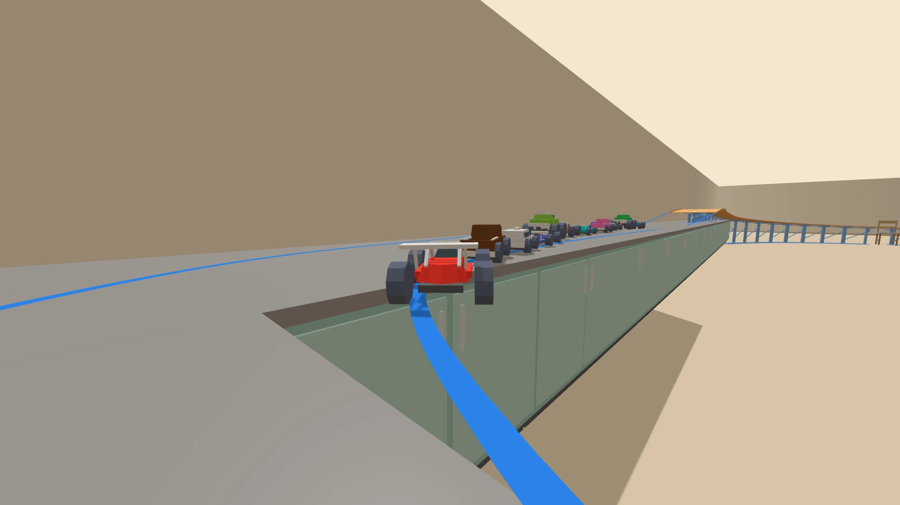
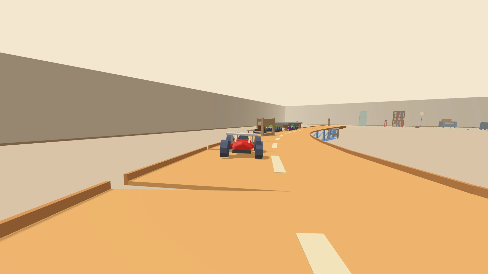

Tiny Throttle — a toy RC car racing game
Tiny Throttle is a racing game that runs in your browser: you drive a toy RC car, a quarter of a metre long, round a kitchen built at real size, so the worktop is a cliff and a cutting board is a ramp. You race 11 other cars over four laps. It is free, with nothing to download and no account, on a phone, a tablet or a computer.


Countertop Canyon
The track is called Countertop Canyon, and a lap is about 81 metres at the car's scale. The cars line up on the floor tiles beside the fridge. From there the road climbs a cutting board leaned against a cabinet door and comes out on top of the worktop, 0.92 m above the floor. Along the worktop you weave past cans, jars and the toaster. At the sink, the road turns into an orange plastic track that crosses the basin, with one gap in it above the drain. On the far side the plastic track snakes back down over two dining chairs, and the last stretch runs home across the tiles to the line.
Hopping and falling off
Your car can hop. Most of the time you hop to clip a corner or to shake off a car beside you. At the sink you have to: the gap above the drain has no road in it, and a car that rolls into it drops into the basin. The same goes for any raised stretch. Drive off the edge of the worktop or the plastic track and you fall. Nothing ends: after a second and a half the car is put back on the road, and you lose only the time.
A race
Twelve cars start on the grid: yours and 11 driven by the game. The top of the screen shows your place, the lap you are on and the race time, and a banner tells you when the final lap begins. When you cross the line for the last time, the results show every car's place and time, and Race again puts you straight back on the grid. While the title is up, a race of the other cars runs behind it.
Keys and touch
On a keyboard, the arrow keys or WASD drive and steer, Space hops and Shift drifts the car round a tight corner. Enter or Space starts a race from the title, and M turns the sound on and off.
On a phone or tablet the car drives forward by itself, so you only steer. Buttons on the screen steer left and right, brake, and hop.
What is not done yet
There is one track so far, the kitchen, and one kind of race against cars the game drives. Racing your friends online is planned but not built yet. The game speaks English only.